One server, one script
A fresh Ubuntu 24.04 or 26.04 VPS, a domain, an account on GitHub, GitLab, Bitbucket or Azure DevOps. The installer asks five questions and does the rest.
-
wget -qO- https://raw.githubusercontent.com/andreapollastri/studio/refs/heads/main/installer/install.sh | sudo bash
- The domain. You type it, for example
dev.example.com. The script shows the one DNS record to create:*.dev.example.com → A → your server's IP. - The check. It resolves a random name under the wildcard and
studio.<domain>through a public resolver and waits until both point at the server. You can skip and fix DNS later; certificates are issued on demand when hosts resolve. - The first administrator. Name and email. The password is generated: the summary shows it, with the dashboard's address and the email, in a yellow box before anything is installed, and again at the end. Save it then; nothing shows it later. Studio has no public sign-up and no social login: accounts are created here and in the dashboard, and people sign in with a password.
- The git provider. GitHub, GitLab (gitlab.com or your own), Bitbucket Cloud or Azure DevOps (with its organization): one for the whole Studio, the same forges Larapilot integrates with. See The git provider.
- Your token there. With the instructions on screen you create it; the script verifies it with the provider and stores it for your account. It clones and deploys project sites and creates new repositories. Every other person adds their own later.
Then it installs the newest release of Studio, the latest published vX.Y.Z tag (the head of the main
branch only while no release is published; the first release then replaces it), with what it needs:
Caddy, PHP 8.3, 8.4 and 8.5 (8.5 alone on Ubuntu 26.04, see below), Composer, Node, Claude Code, the provider's CLI
(gh, glab or the Azure CLI), MariaDB, PostgreSQL and redis. Ten minutes later:
-
https://studio.<domain>
Sign in, turn on two-factor authentication, add your Claude credential in Settings → Connections, create the first project in Administration → Projects, invite the team. From then on Studio updates itself every night to the newest release; see Updates.
Requires: Ubuntu 24.04 or 26.04 LTS (with sudo or Ubuntu
26.04's sudo-rs), amd64 or arm64, 4 GB of
memory or more · a domain with a wildcard record · an account per person on the git provider · a Claude subscription or an
Anthropic API key per person who chats · Laravel projects with Larapilot (Studio installs it, with Laravel Boost, in
the repositories it creates).
What it installs
installer/install.sh turns a bare Ubuntu into the whole thing, and the same steps (in
installer/lib/system.sh) run again at every update, so a release can bring what it needs. What apt prints
goes to /var/log/studio-install.log; when a package fails, the installer shows the end of it. Run on a
server where Studio is installed, the script starts the updater instead of asking questions; after an installation that
stopped halfway it starts again from the questions. Beta testers install the head of the main branch instead of the
newest release, and keep following it (see Updates):
-
wget -qO- https://raw.githubusercontent.com/andreapollastri/studio/refs/heads/main/installer/install.sh | sudo STUDIO_CHANNEL=beta bash
| Piece | Role |
|---|---|
| Caddy | HTTPS for every host under the domain, with certificates issued on demand: before issuing one, Caddy asks Studio whether the host is known. No DNS API token, no per-host certbot runs. |
| PHP 8.3, 8.4, 8.5 | From ppa:ondrej/php, with the usual extensions and PHP-FPM. Each project picks its version; a pool per site and per workspace runs as its own user. The list comes from the release's installer/requirements.env, so a later release can add a version. Where the PPA does not serve the Ubuntu release yet (26.04 at first), PHP comes from Ubuntu's own archive, which carries PHP 8.5 alone: Studio runs on it and projects can pick it; the next update adds 8.3 and 8.4 once the PPA serves 26.04. |
| Composer, Node 22, Claude Code | What a Laravel project and the agent need. Claude Code is installed once, system-wide; each workspace runs it with its own login, and every update of Studio brings the newest one. |
| The provider's CLI | gh for GitHub, glab for GitLab, the Azure CLI with the azure-devops extension for Azure DevOps; nothing for Bitbucket, whose REST API Larapilot calls directly. The agents open pull requests with it. |
| MariaDB, PostgreSQL, redis | Each project picks an engine; every site and every workspace gets a database and a user of its own. Redis is shared with a prefix per site. |
| Studio | The newest release tag (or, for beta testers, the head of main) in /opt/studio/releases/<build>, with /opt/studio/current pointing at it and the .env and storage shared in /opt/studio/shared; built, migrated, served at studio.<domain>; a queue worker, a scheduler and Reverb as systemd services. |
studio-admin | The privileged helper in /usr/local/sbin: the only thing the studio user may run as root, through sudo, for a fixed list of commands. Everything on the server is done through it. |
studio-update | The updater in /usr/local/sbin, run by root: nightly by a systemd timer, on demand from Administration → System. See Updates. |
studio-recover | Root's tool in /usr/local/sbin, mode 0700: resets the main administrator from an SSH session when every account is locked out, and edits and reloads Studio's .env (outgoing email). Nothing in Studio calls it. See Locked out. |
| ufw, fail2ban | Ports 22, 80 and 443 open; brute force on SSH banned. |
Where things land
DNS and certificates
One wildcard record is enough: *.<domain> → the server. When a browser asks for
maria-shop.<domain> for the first time, Caddy calls
http://127.0.0.1:8081/api/tls/ask?domain=…; Studio answers 200 for its own host, a project slug or a
workspace preview it knows, 404 for anything else, and Caddy issues the certificate. A host nobody created is never
issued a certificate, which also keeps the rate limits quiet.
Trying it on your Mac first?
Studio runs without the server pieces: the local driver points every workspace at one bridge on
your machine, driving the claude you already use. composer setup, an admin,
composer run dev, then the bridge inside any Laravel project with Larapilot. The demo seeder gives
you an agency with three projects and a live conversation. See Local development.
Five words
Everything in Studio is one of these.
A Laravel repository with Larapilot installed, its deploy branch, the PHP version and database it needs, the staging site where the deploy branch runs, and the people who may open it. An administrator creates it; the repository is never touched by Studio itself.
One clone per person × project on the server, under a Linux user of that person: the repository on the deploy
branch, dependencies installed, a database of its own copied from the project site, Claude Code running with
that person's credential, the bridge. Served at <user>-<project>.<domain>. A PM
has one just like a developer: the skills that write the PRD or approve a story need a checkout to commit to.
A Claude Code session inside the workspace, kept by Studio with its transcript and its session id, so it resumes days later with its memory. Several conversations can live in one workspace; each is a separate session.
A small Node service inside the workspace. Studio sends it the person's message; it drives claude
in stream-json mode, posts every event back to Studio, and holds a permission question until the
person answers it. Zero dependencies, one process per conversation, released after an idle period.
The deploy branch, served by the same server at <project>.<domain>. Studio creates it
when the project is created, registers a push webhook on the git provider, and redeploys it on every push to the
deploy branch.
Its Larapilot dashboard is what the PM watches; its API feeds the Board; its database seeds new workspaces.
Where things live
| Place | What runs there | What is stored there |
|---|---|---|
| Browser | Studio's interface: projects, the chat, and next to it the preview, the changes and the history, a terminal and an editor; the administration | Nothing but the session cookie |
| The server | Caddy, Studio (Laravel 13 + Reverb), PHP-FPM pools, MariaDB and PostgreSQL, redis; one Linux user per person for their workspaces, one per project for its site; a bridge service per workspace | Accounts, projects, transcripts, permission decisions, encrypted tokens; the clones, the databases, each person's Claude login in their home |
| Outside | The git provider: GitHub, GitLab, Bitbucket or Azure DevOps (repositories, pull requests, the push webhook); Anthropic (Claude Code with each person's subscription or key) | Code, the tokens each person created |
A request, from words to a pull request
Maria is the PM of Shop Acme. Here is one afternoon, screen by screen.
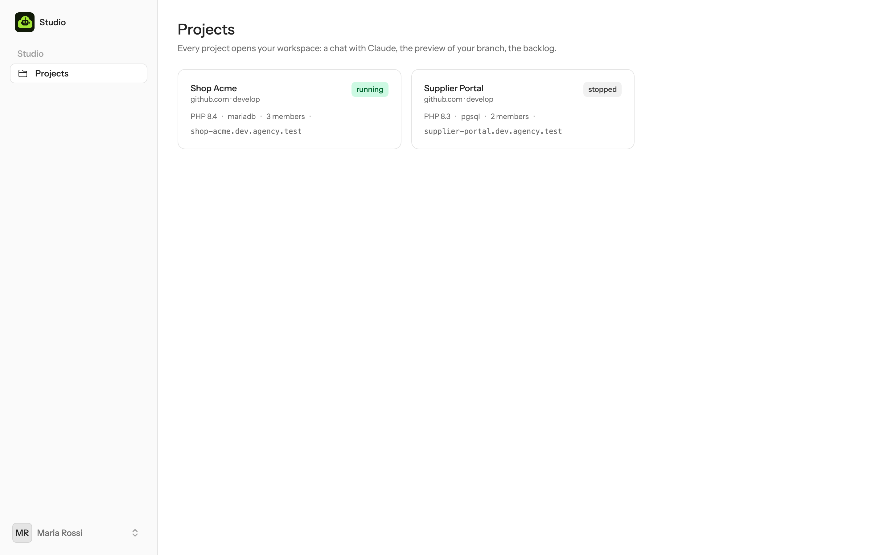
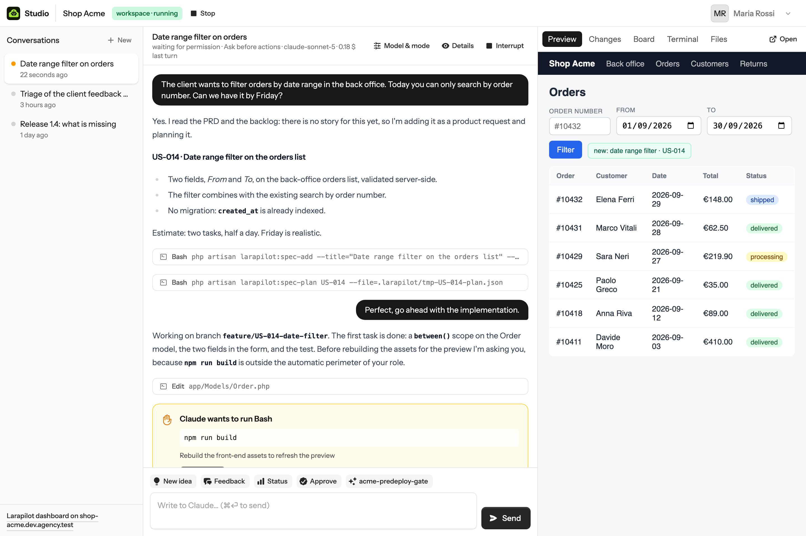
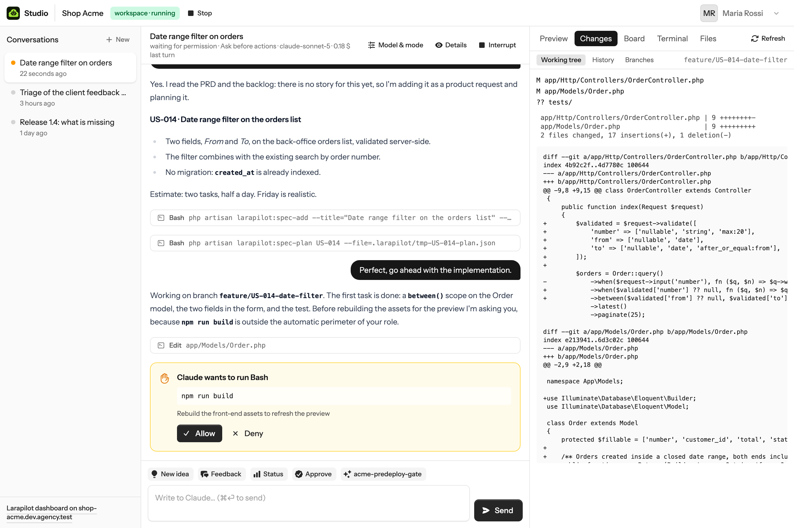
When the story is reviewed and merged on the deploy branch, the git provider calls Studio's webhook and the project site at
shop-acme.<domain> pulls, builds and migrates. Its Larapilot dashboard at /larapilot
shows the backlog as it is now, to the people of the project once they are logged in to Studio.
What happened underneath
browser→
Studio→
bridge→
claude -p --output-format stream-json
Studio records the message, marks the conversation as working, and hands the text to the bridge of that workspace together with the address and token to call back. The bridge writes one line on the agent's stdin.
claude→
bridge→
POST /api/bridge/events→
Reverb→
browser
Text, tool calls, results and permission questions come back as small batches. Studio stores them, broadcasts them to the open chat, and polls as a fallback when no websocket is available.
Maria — The client wants to filter orders by date range in the back office. Can we have it by Friday?
Claude — Yes. There is no story for this yet, so I'm adding it as a product request and planning it. US-014 · Date range filter on the orders list. Two tasks, half a day.
Maria — Perfect, go ahead.
Claude — Working on feature/US-014-date-filter. Before rebuilding the assets for the preview I'm asking you: Allow / Deny.
Four roles, one interface
A role decides whether a person can chat and how much Claude may do before asking.
| Role | Can | Permission preset |
|---|---|---|
| Administrator | Everything: projects and their settings, MCP servers, people; a workspace on every project | acceptEdits |
| PM | Chat on their projects, approve; preview, changes and history, terminal and files of their own workspace | default: Claude asks before commands and edits outside the automatic scope |
| Developer | The same as a PM, with the developer's preset: implement, test, open pull requests | acceptEdits: edits run, commands still ask |
| Client | Look: the project site as preview, and its Larapilot dashboard; no chat, no workspace | — |
Presets map to Claude Code's --permission-mode and are set per role in config/studio.php.
A conversation starts with its role's preset; Model & mode switches it among the
modes the role may use (all four for administrators, PMs and developers). Larapilot's skills and the repository's
own are typed as slash commands; see Skills & Claude's questions.
The git provider
One Studio works with one git provider, chosen in the installer: GitHub, GitLab, Bitbucket Cloud or Azure DevOps, the same remote forges Larapilot integrates with. Every project is a repository there and every person connects a token for it. Studio never mixes providers and keeps no history of a previous one.
| Provider | Repositories | A new one goes to | The agent's tools | Push webhook |
|---|---|---|---|---|
| GitHub | https://github.com/owner/repo | Your account or an organization | gh, with GH_TOKEN | Repository webhook, HMAC signature |
| GitLab | https://gitlab.com/group/sub/repo, or your own GitLab | Your namespace or a group / subgroup | glab, with GITLAB_TOKEN (and GITLAB_HOST when self-managed) | Project hook on the deploy branch, secret token |
| Bitbucket Cloud | https://bitbucket.org/workspace/repo | A workspace, or one of its projects | Larapilot's REST client, with BITBUCKET_ACCESS_TOKEN; no CLI | Repository webhook on repo:push, HMAC signature |
| Azure DevOps | https://dev.azure.com/org/project/_git/repo | A project of the organization | az repos (Azure CLI + azure-devops), with AZURE_DEVOPS_EXT_PAT | Service hook on git.push, secret header |
The installer asks for the provider, the address of a self-managed GitLab or the Azure DevOps organization, checks
the administrator's token there and installs the provider's CLI. In every workspace the person's token is in the
environment three ways: for git, through the askpass helper and with the user name the provider expects
(x-access-token, oauth2, x-bitbucket-api-token-auth); for the CLI; and for
Larapilot's integration. A repository Studio creates gets that integration turned on in its first commit
(larapilot:settings-set --gitlab=YES and so on); in an existing repository the team turns it on once and
commits .larapilot/config.yaml.
php artisan studio:git-provider gitlab --url=https://git.example.com on the server switches it and forgets
every token of the previous provider; sudo studio-update ensure then installs the new CLI. With projects
the provider stays: another provider means another Studio.GitHub
Organizations. A new repository goes to your account or to an organization you belong to; the form lists the organizations your token can see, and creating a repository there needs the right to do so in that organization. Organizations that restrict fine-grained tokens approve them in Organization settings → Personal access tokens. With SAML single sign-on, a classic token must be authorized for the organization (Configure SSO next to the token).
- Where. GitHub → Settings → Developer settings → Personal access tokens → Fine-grained tokens → Generate new token.
- Resource owner. The organization that owns the projects, or your account. A fine-grained token
reaches one owner: when projects live in several organizations, use a classic token with
repo,read:organdadmin:repo_hook. - Repository access. The repositories of the projects, or all of them; administrators who create repositories need all of them.
- Permissions, everyone. Contents read and write, Pull requests read and write, Metadata read.
- Permissions, administrators. Also Administration read and write (new repositories) and Webhooks read and write (the deploy webhook).
GitLab
Groups. A new repository goes to your personal namespace or to a group or subgroup where you are at
least Developer and the group lets that role create projects; the form lists those groups by their full path. A
self-managed GitLab is set once, in the installer (STUDIO_GIT_URL=https://git.example.com), and the
agent's glab gets it as GITLAB_HOST. Registering the deploy webhook needs the Maintainer role
on the repository.
- Where. On your GitLab: avatar → Edit profile → Access tokens → Add new token.
- Scope.
api: clone and push, merge requests throughglaband Larapilot, and for administrators the new repositories and the webhook.read_repositoryandwrite_repositoryalone let git work, not merge requests. - Expiration. GitLab asks for a date. Replace the token in Studio before it expires.
- Copy it into Settings → Connections. It starts with
glpat-.
Bitbucket Cloud
Workspaces and projects. A Bitbucket repository belongs to a workspace and to one of its projects. The form lists the workspaces you belong to and their projects: a workspace alone puts the repository in its oldest project, a project puts it there. Creating repositories needs a workspace role that allows it; registering the webhook needs admin rights on the repository.
- Where. id.atlassian.com → Account settings → Security → Create and manage API tokens →
Create API token with scopes → Bitbucket. API tokens replace app passwords: git signs in with the token as
x-bitbucket-api-token-auth, the REST API with the token as a bearer. - Scopes, everyone.
read:user,read:workspace,read:repository,write:repository,read:pullrequest,write:pullrequest(each ends in:bitbucket). - Scopes, administrators. Also
read:project,admin:repository(new repositories),read:webhook,write:webhookanddelete:webhook(the deploy webhook). - Expiration. Up to a year. Replace the token in Studio before it expires.
Azure DevOps
Organization and projects. One Studio works with one Azure DevOps organization, set in the installer
(STUDIO_GIT_URL=https://dev.azure.com/acme; acme.visualstudio.com addresses work too).
Repositories live in the organization's projects: the form lists them, and a new repository follows the visibility
of its project. Addresses of another organization are refused. Creating repositories needs the Create
repository permission on the project; registering the push service hook needs Project Administrator.
- Where.
https://dev.azure.com/<organization>→ User settings → Personal access tokens → New Token. - Organization. This Studio's, or all accessible organizations.
- Scopes, everyone. Custom defined → Code → Read & write.
- Scopes, administrators. Code → Read, write & manage, and Project and Team → Read.
- Expiration. At most a year, or less when the organization's policy says so.
The login on Azure DevOps is the account's e-mail address; the handle is its first part
(maria.rossi@acme.com → maria-rossi).
A project
Adding a project is a form. Saving it clones the repository, creates its database, serves it at
<slug>.<domain> and registers the push webhook on the git provider that redeploys it on every
push.
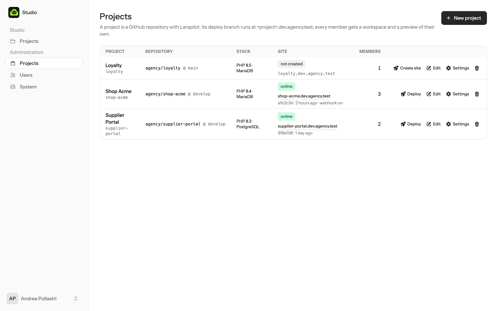
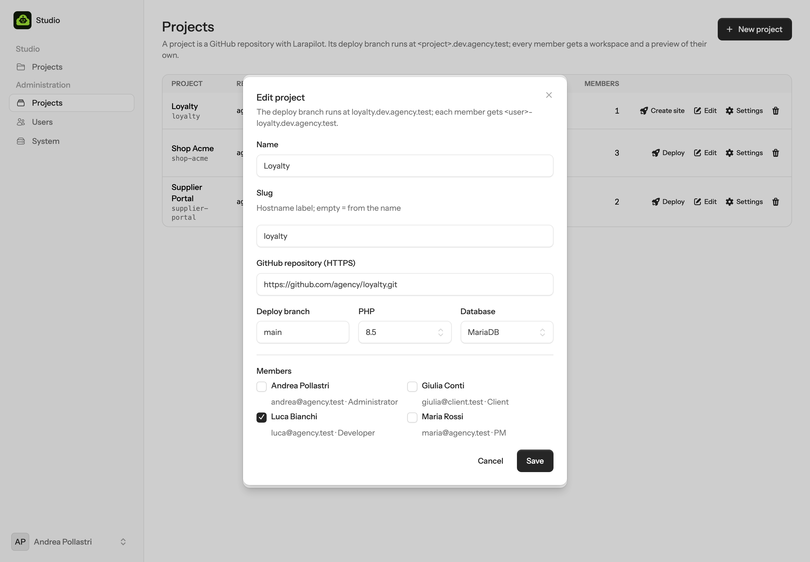
| Field | Used for |
|---|---|
| Name, Slug | The slug names the site (shop.<domain>), the previews (maria-shop.<domain>), the Linux user, the directories and the databases. Lower-case letters, digits and dashes; derived from the name when empty. |
| Repository | The HTTPS address of a repository on the installation's provider: https://github.com/owner/repo, https://gitlab.com/group/repo (or your GitLab), https://bitbucket.org/workspace/repo, https://dev.azure.com/org/project/_git/repo. Addresses of another provider are refused. Cloned with your token for the site, with each member's token for their workspace. |
| Deploy branch | What the site runs and what workspaces start from. A push to it deploys the site. |
| PHP, Database | A PHP version installed on the server (8.3, 8.4 or 8.5 today) and MariaDB or PostgreSQL, for the site and for every workspace of the project. |
| Members | Who may open the project. Administrators see every project without being members. |
Or let Studio create the repository
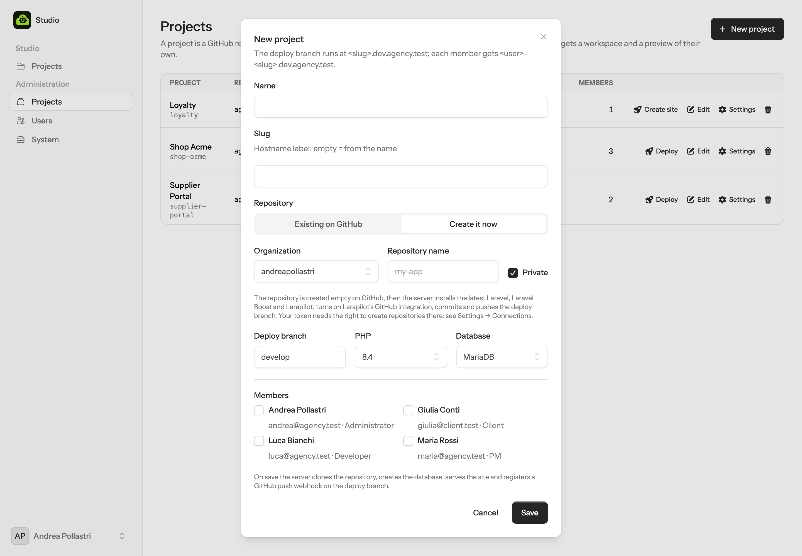
Where a new repository can go depends on the provider: your account or one of your organizations on GitHub, your
namespace or a group on GitLab, a workspace or one of its projects on Bitbucket, a project of the organization on
Azure DevOps. Your token needs the right to create repositories there; the scopes are in
The git provider. What lands in the new repository: composer create-project
laravel/laravel at its current release; laravel/boost and andreapollastri/larapilot
as dev dependencies, with larapilot:install and boost:install run (Boost is always there:
if its install fails, the project stops with the reason instead of going on without it); Larapilot's integration for
the provider turned on in .larapilot/config.yaml; and one commit on the deploy branch (plus
main when the deploy branch is another name).
What an existing repository must have
- Larapilot installed and
larapilot:installrun, so the skills, the.larapilot/workspace, the dashboard and the API exist; Larapilot brings Laravel Boost with it, andboost:installgives the agent Boost's guidelines and MCP server. Without Larapilot the site still deploys, but there is no dashboard and the chat has no skills to call. - A
.env.example. The server copies it and sets the application URL, the database, redis and the Larapilot API token; everything else you put there is kept. - Optionally a
.mcp.jsonat the root for MCP servers every workspace should have, with secrets as${ENV}references, and custom skills under.larapilot/skills/.
People
Accounts are created by an administrator and used with a password. No public sign-up, no single sign-on.
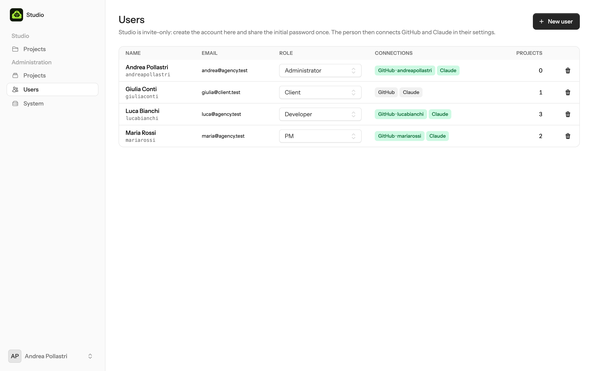
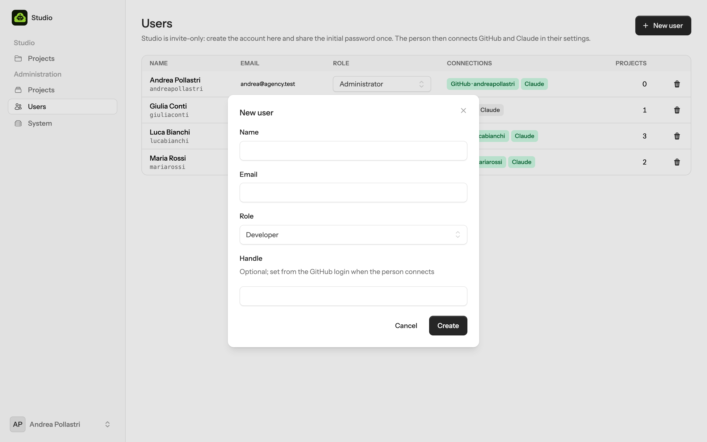
- Create the account. Name, email, role. Studio shows a one-time initial password; share it once, it is never shown again.
- They sign in with email and password, change it, and turn on two-factor in Settings → Security: an authenticator app or a passkey.
- They connect the git provider and Claude in Settings → Connections. Until both are there, a project opens on a page that says so instead of a chat.
- They open a project. Studio shows the projects they are members of. The first open builds the workspace.
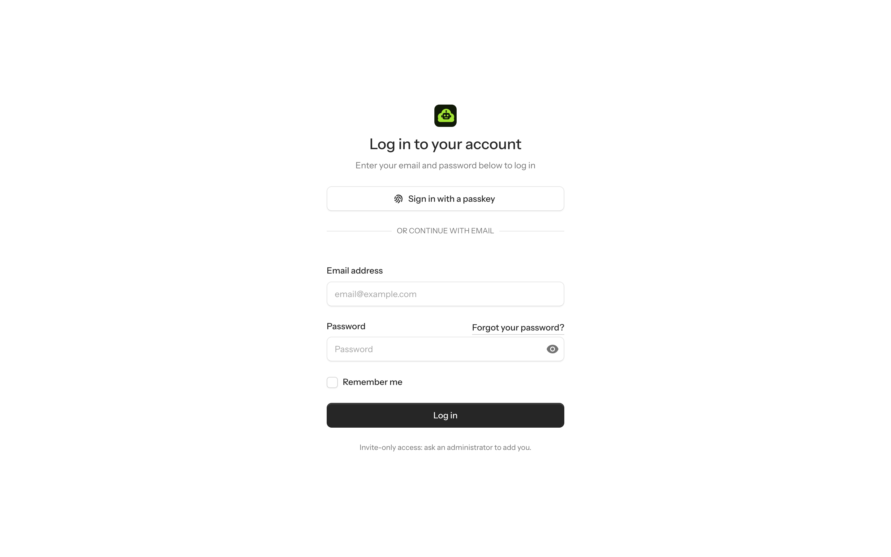
Git & Claude
Two credentials per person, stored encrypted, handed only to that person's workspaces.
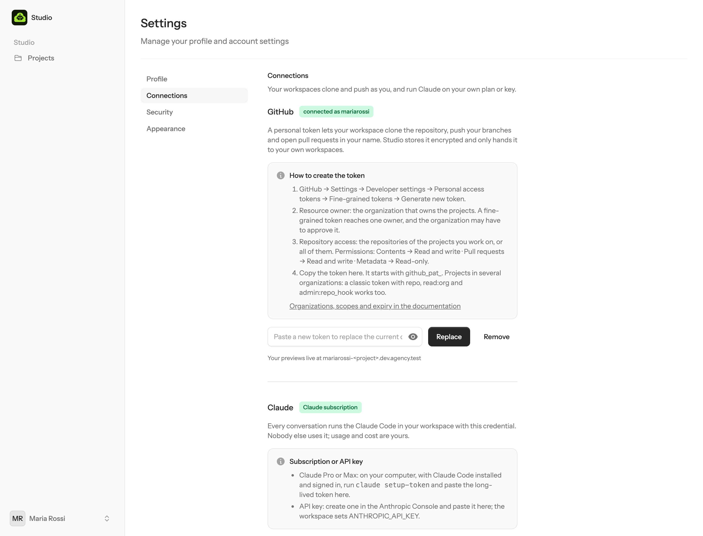
claude setup-token or an API key for Claude.The git provider
A personal token on the provider of this Studio, with the scopes in The git provider.
Studio verifies it there, reads the login, and uses it as the person's handle: their previews are
<login>-<project>.<domain>, their Linux user on the server is ws-<login>
(on Azure DevOps the login is the e-mail address, and the handle its first part). Inside the workspace git pushes
and the provider's CLI opens pull requests as that person. The token never sits in a file git can read: an askpass
helper hands it to git from the environment, with the user name the provider expects.
Claude
Either a subscription or an API key. With Claude Pro or Max: on your own computer, signed in to Claude Code, run
claude setup-token and paste the long-lived token. With an Anthropic Console account: paste the API
key. The workspace exports CLAUDE_CODE_OAUTH_TOKEN or ANTHROPIC_API_KEY accordingly,
and Claude Code's login files live in that person's home on the server, denied to the agent itself.
The project site
<slug>.<domain> is the deploy branch, running on the same server. It is the project's
staging, its dashboard and the source of every workspace's data.
- Creation. When the project is saved, the helper creates a Linux user, clones the deploy branch
with the administrator's token, creates the database, writes the
.envwithAPP_ENV=stagingand a freshLARAPILOT_API_TOKEN, runs Composer (dev dependencies included: the site is a staging environment, and Larapilot and Boost are dev dependencies whose dashboard and API it serves), npm, migrations, a PHP-FPM pool, a Caddy host and a queue worker. Studio registers a push webhook on the repository. - Every push to the deploy branch reaches
/api/git/webhook/<slug>with the project's secret: an HMAC signature from GitHub and Bitbucket, the secret token in a header from GitLab and Azure DevOps. Studio queues a deploy: fetch, reset to the branch, build, migrate, restart the worker. Deploy in the admin page does the same by hand. - The Larapilot dashboard is
/larapiloton that host, behind the Studio login like every other address of the project. The PM's bookmark. - New workspaces copy the site's database (a dump and a restore, MariaDB or PostgreSQL), so a person starts from realistic data. Without a site database, migrations run instead.
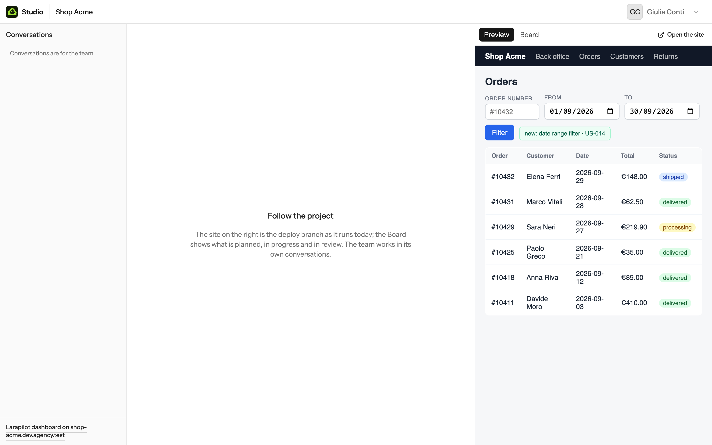
Deploys are a reset to the branch and a rebuild in place, not atomic releases: a failed migration leaves the site on the previous code, a failed build may leave it mid-way for a moment. It is a staging site, kept simple on purpose. For production use the pipeline your project already has.
Project settings
What the server runs for a project, who may open its hosts, and which MCP servers its chats get. Settings on a project in Administration → Projects has three sections: Server, Access and MCP. Saving applies the first two to the site and to every workspace preview; MCP servers are saved one by one (see MCP servers).
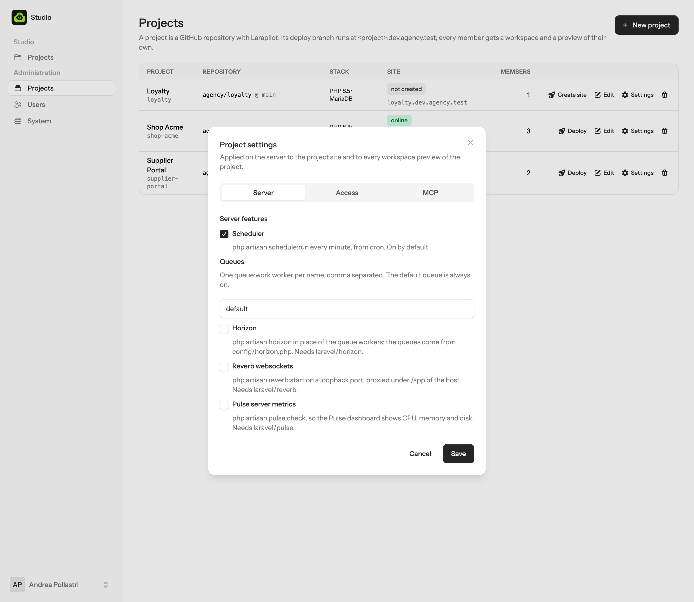
Server features
- Scheduler
- A cron line runs
php artisan schedule:runevery minute as the host's own Linux user. On by default, for the site and for every preview.
- Queues
- One
queue:workworker per queue name, as a systemd unit that restarts on failure and on every deploy.defaultis on from the start; addmail, exportsand two more workers appear.
- Horizon
php artisan horizonin place of the plain workers: Horizon reads the queues fromconfig/horizon.phpand supervises them itself. The app must havelaravel/horizon.
- Reverb
- Runs
php artisan reverb:starton a loopback port of its own and proxies/appand/appsof the host to it. The helper writes theREVERB_*keys into the app's.envonce; the app itself must havelaravel/reverbinstalled.
- Pulse
php artisan pulse:check, so the Pulse dashboard of the app shows the server's CPU, memory and disk. The app must havelaravel/pulse.
- HTTPS
- Nothing to switch on: Caddy issues a certificate for every host the first time it is opened, the deploy site and each workspace preview alike (see The server).
Who can open the hosts
Every address of a project is behind the Studio login: the site, its /larapilot dashboard and API,
each workspace preview, any path. The visitor must be logged in to Studio and assigned to the project, in any
role (developer, PM, client), or be an administrator; anyone else is sent to the Studio login page and comes back
after it, and a logged-in person who is not on the project gets a 403. There is no public mode: a preview runs
with APP_DEBUG on, a site with work not yet released, and neither is for the open internet.
- Only from
- An address list for the site, one for the previews: one IP or CIDR per line. It narrows the login, it never replaces it: from a listed address the visitor still logs in, from any other nobody gets in. Empty means from anywhere, after the login.
- Branch overrides
- A list for
feature/secretreplaces the site's list while that is the deploy branch, and the previews' list for every workspace that is on that branch. Studio remembers each workspace's branch from its Changes tab.
How it works: the Caddyfile puts a forward_auth to Studio's /api/site-auth in front of
every host that is not Studio's own, so no project host is ever served without it, whatever its own file says.
Studio answers 204 (go on), a redirect to its login, or 403. Machines are no exception: a webhook or an
end-to-end test aimed at a project host gets the login page too.
Studio's own session cookie never reaches a project host: the apps there run code the team writes, and
must not see a cookie that opens Studio. A visitor without a pass is sent to studio.<domain>,
logs in there if needed, and comes back with a one-time token valid for two minutes. The gatekeeper swaps it
for a pass cookie bound to that host alone, good for twelve hours; it is useless on any other host and in
Studio.
MCP servers
Give the chats of a project more tools: the project's documentation, error tracking, a CRM, an internal API. Any remote MCP server works; Studio does not care whose it is.
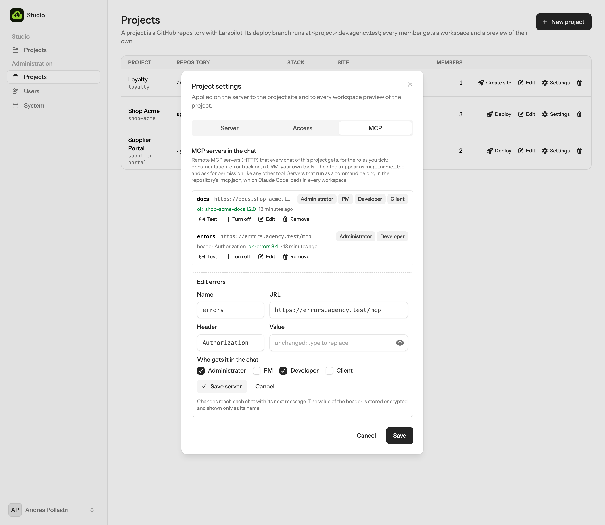
- Add one
- Settings → MCP on the project: a name (it becomes part of the tool names,
mcp__docs__search), the URL of the server, and usually one header such asAuthorization: Bearer …. The value is stored encrypted and never shown again; editing without typing a new value keeps it.
- Who gets it
- Tick the roles. A PM can have the documentation server while only administrators and developers get the one that reads production errors. Clients get nothing unless you tick them.
- Test
- Studio makes the
initializecall Claude Code would make, with the header, and keeps the answer:okwith the server's name and version, a refused header, a wrong URL.
- In the chat
- Each person's chat gets the enabled servers their role may use, from the next message on; Model & mode lists them. Their tools ask for permission like any other tool, unless the mode lets them through. Turn off takes a server out of every chat without forgetting it.
Remote here, commands in the repository
Studio only adds remote servers (the streamable HTTP transport). A server that runs as a command belongs in
the repository's .mcp.json: Claude Code loads it in every workspace, as the person's own Linux
user, with secrets as ${ENV} references. Both kinds end up in the same chat.
The bridge hands Studio's servers to Claude Code through a file only the workspace user can read, never on the
command line, so a token does not show in the server's process list. It accepts nothing but
{"type": "http", "url"} entries from Studio.
Studio sends little email: the Forgot your password? link, and that is about it. The installer does not ask for a mail account, so a fresh server writes its messages to a log file instead of sending them, and the pages say so. Ten minutes with any provider's SMTP credentials turn it on.
What works without it
Accounts are created by an administrator, who hands over the first password in person; a person who forgets
theirs asks an administrator, who gives them a new one from Administration → Users (the key icon: the
old sessions close, 2FA is removed, the new password shows once). Until email is set up, the Forgot your
password? page explains exactly that instead of promising a link. Whoever holds root has
studio-recover admin for the administrators themselves.
Turning it on
Studio's settings live in one file, /opt/studio/shared/.env, shared by every release so an update
never touches it. It is owned by the studio user and readable by nobody else; root edits it over
SSH. Studio does not read the file on each request but a cache built from it, so a change is live only after a
reload, and studio-recover does both in one go:
-
studio-recover env # opens the .env in $EDITOR (nano), reloads on save -
studio-recover reload # after editing the file with anything else
The file already carries the block to fill in. Set MAIL_MAILER to smtp, uncomment the
host, port, scheme and credentials, and keep a sender address at your domain (most providers want the domain
verified on their side first):
MAIL_MAILER=smtp
MAIL_FROM_ADDRESS=studio@agency.test
MAIL_FROM_NAME="Studio"
MAIL_HOST=smtp.resend.com
MAIL_PORT=587
MAIL_SCHEME=smtp
MAIL_USERNAME=resend
MAIL_PASSWORD=re_xxxxxxxxxxxxxxxxxxxxxxxxMAIL_SCHEME is smtp for a STARTTLS port (587, 2525) and smtps for an
implicit-TLS port (465). Where to find the values with the usual providers:
| Provider | Host · port | Username | Password |
|---|---|---|---|
| Resend | smtp.resend.com · 587 or 465 | resend | an API key |
| Postmark | smtp.postmarkapp.com · 587 | the server token | the same server token |
| SendGrid | smtp.sendgrid.net · 587 | apikey | an API key |
| Mailgun | smtp.mailgun.org · 587 (smtp.eu.mailgun.org in the EU) | postmaster@<your domain> | the SMTP password of that domain |
| Amazon SES | email-smtp.<region>.amazonaws.com · 587 | SMTP credentials made in the SES console (not the IAM access key itself) | |
| Brevo | smtp-relay.brevo.com · 587 | the account login | an SMTP key |
| Google Workspace | smtp.gmail.com · 587 | the mailbox | an app password (2-step verification on) |
| Your own server | its host · 587 or 465 | a mailbox allowed to relay | |
Studio ships with the SMTP transport alone: a provider's HTTP API (Resend's, Postmark's, SES's) needs a package
the release does not carry, and every one of them offers SMTP, so there is nothing to install. Any other line of
the file is Studio's own business; the ones you may want are the MAIL_* block and, for a different
interface language, APP_LOCALE (en or it).
Checking it
Log out, open Forgot your password?: once email is configured the form is there. Send yourself a link;
it should arrive within a minute. If it does not, the reason is in /opt/studio/shared/storage/logs/
(the newest laravel-*.log): a refused login, a blocked port, a sender the provider does not know.
Fix the line, studio-recover reload, try again. To go back to not sending, MAIL_MAILER=log
and a reload.
Updates
Studio keeps itself up to date. studio-update, run by root, installs every new build of its channel
together with what it needs on the server: a new PHP, a newer Node, a package, the provider's CLI, a changed
service. The stable channel follows the release tags; beta testers follow the main branch.
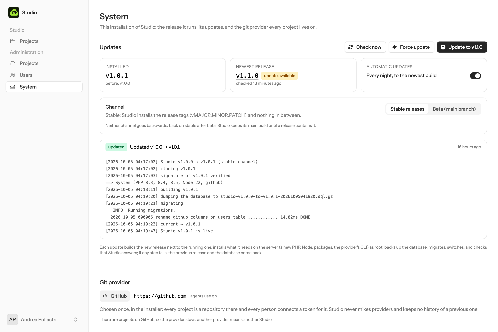
Channels
| Channel | Installs | For |
|---|---|---|
| Stable (default) | The newest release tag, vMAJOR.MINOR.PATCH; pre-releases and everything between two releases are skipped | Every team |
| Beta (beta tester mode) | The head of the main branch, every new commit, before it becomes a release | A server you test Studio on, not the team's daily work |
The channel is a switch in Administration → System; the installer can start on beta
(STUDIO_CHANNEL=beta, see What it installs). Neither channel goes
backwards: a build is installed only when it contains the installed commit, which the updater checks on a blob-less
mirror of the repository. Back on stable after beta, Studio keeps its main build, newer than the last release, until a
release contains it; when a release is tagged on that very commit, it moves to the release's name.
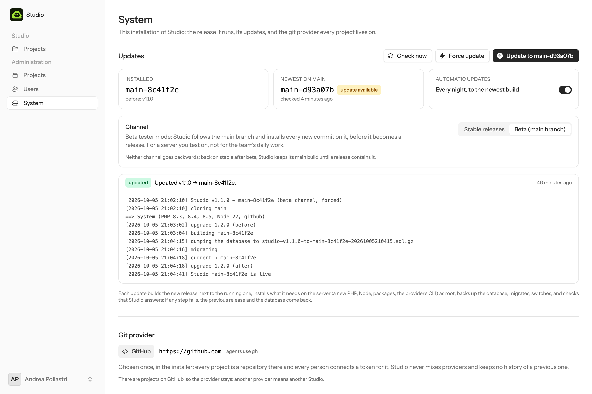
main instead of the newest release,
each one installed as main-<commit> with the same backups and rollback as a release.When
- Every night, between 04:00 and 05:00, from a systemd timer, while automatic updates are on (the default).
- From Administration → System: Check now, then Update to ….
- Force update, in the same place: builds the newest build of the channel and installs it now,
even when it is the one already installed (a broken build, a failed system step, a server changed by hand). The new
build goes next to the live one as
<build>@<time>, with the same dump and rollback. It never goes back to an older build: that is whatstudio-update rollbackis for. - On the server:
sudo studio-update apply(--forcefor the same as the button). Running the installer again does the same asapply.
What an update does
- Clone the build into
/opt/studio/releases/<build>. A tag'sVERSIONfile must say the same as the tag. With/etc/studio/update-signersin place, the tag (or, on beta, the commit) must carry a valid SSH signature by one of those keys. - System step, as root, from the new build: its
installer/requirements.envnames the PHP versions, the PHP that runs Studio and the Node major;installer/lib/system.shinstalls what is missing, refreshes Composer and Claude Code, and the provider's CLI. Nothing is removed. - Upgrade scripts, phase before:
installer/upgrades/<version>.shof every version after the installed one up to the new one, in order, as root, for what a release needs beyond packages. On beta, where several builds share a version, a script that changed since it ran runs again. - Build next to the running release, on the shared
.envandstorage: Composer without dev dependencies, the assets. - Database: a dump to
/var/backups/studio/, maintenance mode, migrations with the new code. Caddy's certificate question, the access check of protected hosts and the bridges' callbacks keep answering meanwhile. - Switch: the new build's helper, templates, services, PHP-FPM pool and Caddyfile, then
/opt/studio/currentpoints at it; upgrade scripts, phase after; caches, restarts, maintenance off. - Health check: Studio must answer
/up. If it does not, or any step from the dump on fails, the previous release, its root files and the database dump come back, and the System page shows the log.
Project sites and workspaces are not touched: they are your projects. Bridges move to the new code when they restart (a workspace stopped and started, a changed token); a release that changes the bridge protocol restarts them in its upgrade script. Three releases and five database dumps stay on disk.
-
studio-update check # what the channel would install, and why not -
studio-update apply # --force · --to v1.1.0 -
studio-update channel beta # or stable · auto on|off -
studio-update rollback # the previous release and its database -
studio-update ensure # the system step again · status
Locked out
A forgotten password or a lost 2FA device is an administrator's job: the key icon in Administration → Users gives the person a new password, shown once, and removes their 2FA (with email set up, people also get the usual Forgot your password? link). Administrators do the same for each other. What is left is the last administrator: nobody above them in Studio, and the server itself fine. The one key that is never in Studio is root on the server. From an SSH session:
-
studio-recover admin # the main administrator: the oldest admin account -
studio-recover admin you@agency.test # that account instead; unknown = created
The account gets a new password, printed once in the terminal; its 2FA is removed, every session it had is closed,
it is an administrator again with a verified email. Its git and Claude credentials stay, and nothing else on the
server is touched. Log in with that password, change it in Settings, set 2FA up again. Each run is written
to syslog (auth) and to Studio's log.
studio-recover lives in /usr/local/sbin, mode 0700: only root can read or run it, there is
no sudo rule for it and nothing in Studio calls it. It runs php artisan studio:reset-admin as the
studio user, which is the same thing if you prefer artisan. Whoever can reset the administrator can
already read /opt/studio/shared/.env: the script adds no power root does not have, it only makes the
way back short and recorded.
Releasing
For whoever maintains Studio: set VERSION (1.0.0 today), commit, and push a vX.Y.Z tag on a
commit that passed the tests. Every stable server installs it at its next run; beta servers already run that commit.
The release workflow refuses a tag whose VERSION says otherwise, and so does the updater. To sign
releases, tag with git tag -s and an SSH key (gpg.format=ssh), sign the commits of main
too if beta servers check signatures, and put the allowed signers, in ssh-keygen's allowed-signers
format, in /etc/studio/update-signers on each server. What a release needs on the server goes in
installer/requirements.env, or in an upgrade script (installer/upgrades/README.md).
The chat
Three panes: your conversations, the chat, and the right pane with the preview, the changes, the terminal and the files. The chat is Claude Code with a face.
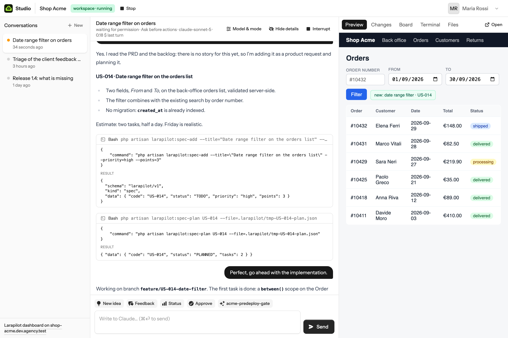
- Messages
- Yours on the right. Claude's as prose, with Markdown rendered and code inline. System notices, in red when something failed, say what to do.
- Streaming
- Text arrives as it is typed over Reverb. Without a websocket the chat polls every few seconds while the agent works; nothing is lost either way.
- Sessions
- A conversation keeps its Claude session id. Close the laptop, come back tomorrow: the next message resumes with the same memory. The title is the first message, trimmed.
- Interrupt
- Stops the current turn. The process is released; the next message resumes the session.
- Cost
- The header shows the model and the cost of the last turn as Claude Code reports it.
- Several at once
- Open a new conversation for a separate topic. They share the workspace and the branch, so keep one piece of work per conversation.
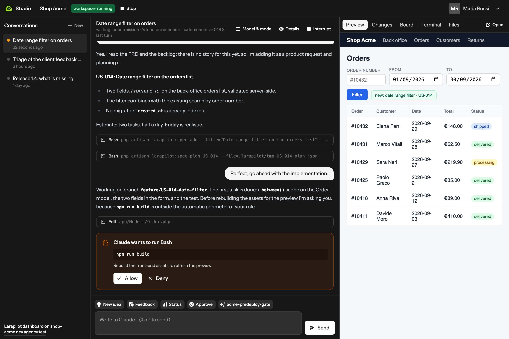
Permissions
Claude Code asks before running a tool its mode does not allow outright. In Studio the question is a card.
The card names the tool, shows the command or the file, and the reason when Claude gives one. Allow runs it with the input shown; Deny tells Claude the person declined, and the turn continues from there. While a question is open the conversation is marked waiting for permission in the sidebar, so a teammate glancing at the list sees who is blocked on whom.
| Preset | Claude Code mode | What runs without asking |
|---|---|---|
| PM | default | Reads and the tools Claude Code auto-approves; edits and commands ask |
| Developer, Administrator | acceptEdits | File edits in the workspace; commands ask |
| Client | plan | Nothing: a client cannot chat, the preset only applies if the role changes |
Bypass mode is disabled in every workspace by the managed settings. A question left unanswered when a turn ends is closed as denied. The decision, who took it and when, is stored with the conversation.
Model, effort, autopilot
Each conversation chooses how Claude Code runs. Model & mode in the chat header opens the dialog; the choice applies from the next message and the session keeps its memory.
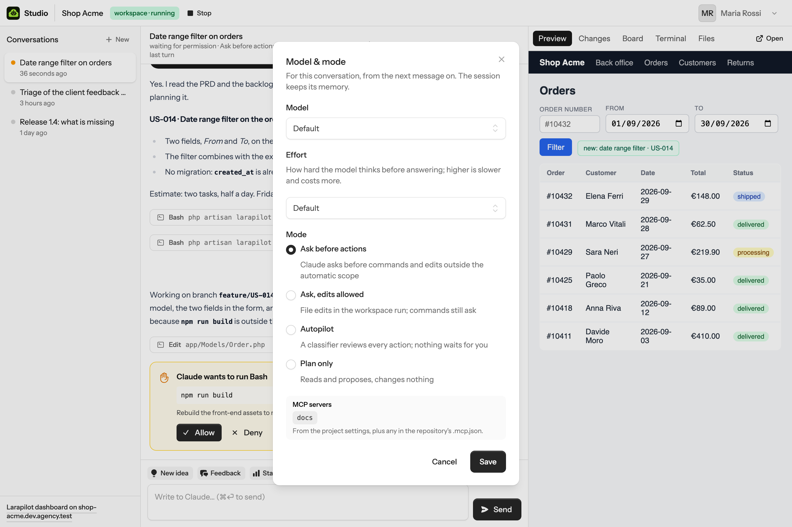
| Setting | Choices | Becomes |
|---|---|---|
| Model | Default, Fable 5.1, Opus 5.5, Sonnet 5.5, Haiku 4.5 (the list is in config/studio.php) | --model |
| Effort | Default, low, medium, high, max: how much the model thinks before it answers | --effort |
| Ask before actions | Claude asks before commands and edits outside the automatic scope | --permission-mode default |
| Ask, edits allowed | File edits in the workspace run; commands still ask | acceptEdits |
| Autopilot | No questions: Claude Code's classifier reviews each action before it runs; the turn goes to the end on its own | auto |
| Plan only | Reads, reasons and proposes; changes nothing | plan |
Which modes a role may pick is modes_by_role in config/studio.php; the role's starting
mode is permission_mode. Bypass mode, the one with no review at all, is not offered and is disabled in
every workspace by the managed settings: autopilot is as far as it goes.
Skills & Claude's questions
The chat is Claude Code: a skill is a slash command typed in the input, and Claude's questions come back as a card to answer.
Skills
Type /larapilot-inception, /larapilot-triage, /larapilot-plan,
/larapilot-implement, /larapilot-review or any other skill, with the request after it, as
you would in the terminal. Larapilot projects keep their own skills in
.larapilot/skills/<name>/SKILL.md, committed with the code, and skills in Claude Code's own
.claude/skills/ count too: /acme-predeploy-gate works the same way. Add one from the chat
with /larapilot-custom-skill; commit, and every workspace has it at the next start.
Claude's questions
When a skill needs a decision (the effort of a Larapilot setup, how fine the backlog is, the Git mode), Claude asks with its question tool and the chat shows a card: each question with its options and what they mean, one choice or several where the question allows it, and a field for an answer of your own. Answer sends the choices back to the same turn and Claude goes on; Skip lets it go on with its own judgement and say what it chose. The conversation waits for the card like it waits for a permission.
The right pane
Where the conversation's effect shows up: Preview, Changes,
Terminal and Files. Clients see the Preview only. The arrows after the tabs open the
pane full screen, and bring the conversations and the chat back as they were. The preview shows apps that
refuse to be framed (X-Frame-Options: DENY): on project and preview hosts Caddy lets Studio, and
only Studio, frame them.
- Preview
- The Laravel app of your workspace on your branch, served by the server at
<you>-<project>.<domain>. Open puts it in a tab, which always works; inside the pane the app must not forbid framing (X-Frame-Options). While the workspace is stopped, and for clients, the pane shows the project site.
- Changes
- Branch,
git status, the stat and the diff of the working tree, read through the bridge, plus the History and Branches views. It refreshes after every stored chat event while the tab is open.
- Terminal
- Allowlisted commands in your workspace, without the agent in between; see Terminal.
- Files
- The workspace's files in the browser, with the editor of VS Code; see Files.
- Over SSH
- The workspace is a directory on the server. A developer with SSH access can open it in
an editor over SSH; the same Claude session resumes there with
claude --resume.
Files
A file manager and an editor for the workspace, in the right pane.
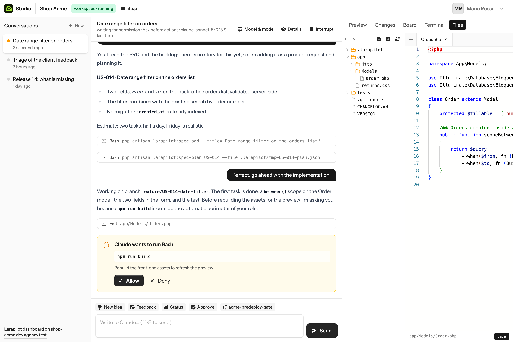
- Browse
- Folders open on click and load through the bridge;
.gitis never shown; the button next to the open tabs hides the tree when the editor needs the room. New file, new folder, rename and delete sit in the row menu; a folder is deleted with everything in it, after a confirmation.
- Edit
- Files open in tabs. Syntax highlighting follows the extension (PHP and Blade, JavaScript, TypeScript, CSS, JSON, Markdown, YAML, shell, SQL…), with VS Code's find, replace, multi-cursor and keyboard shortcuts. The theme follows Studio's light or dark mode.
- Save
- ⌘S / Ctrl+S or the Save button. Every file carries the hash of its bytes from when it was opened; if Claude or a terminal command changed it meanwhile, the save is refused and the tab says so instead of overwriting.
- Limits
- Binary files and files above
BRIDGE_FILE_MAX(512 KB) are described, not opened. The editor is loaded on first use, so the rest of Studio stays light. Everything runs as the workspace's own Linux user, so what a person can edit here is exactly what they could edit over SSH.
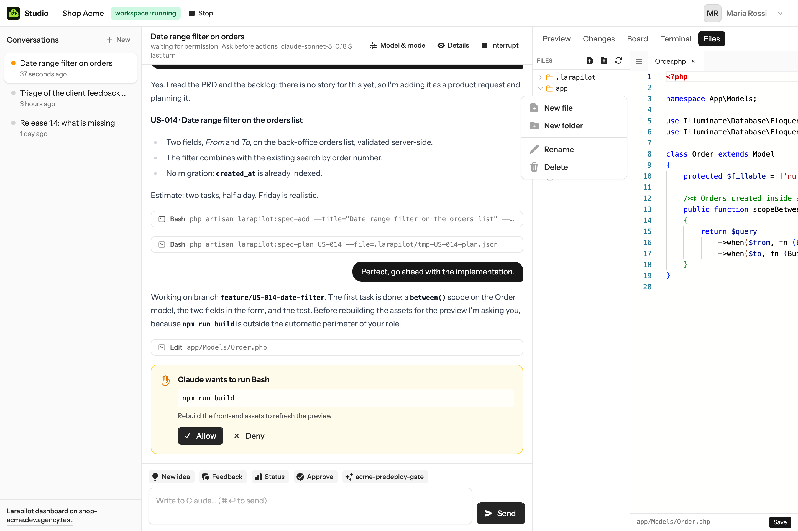
History & branches
The Changes tab has three views: the working tree, the history, the branches.
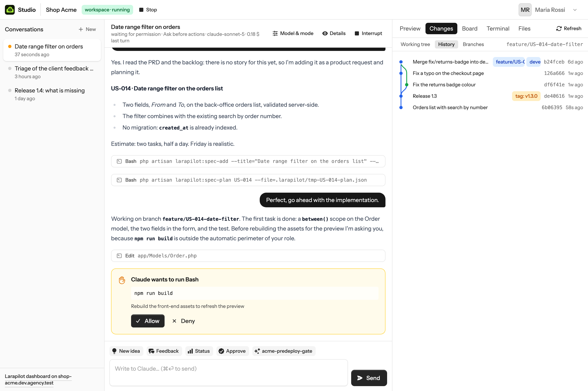
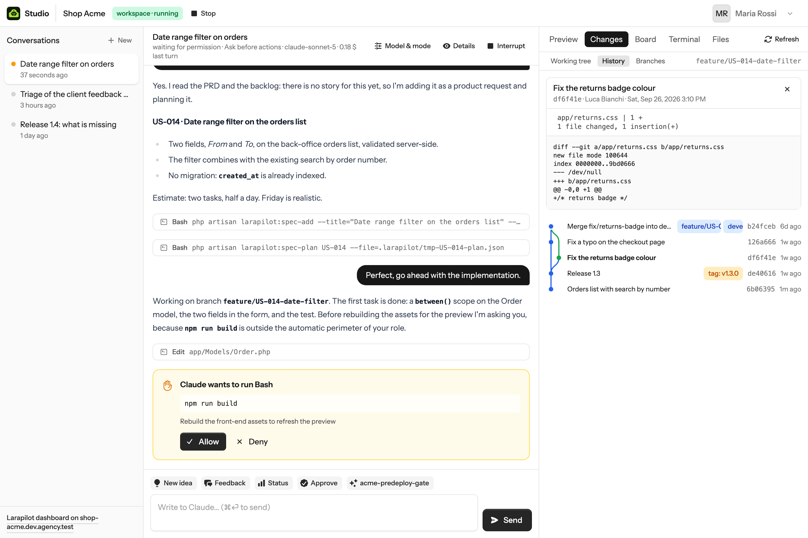
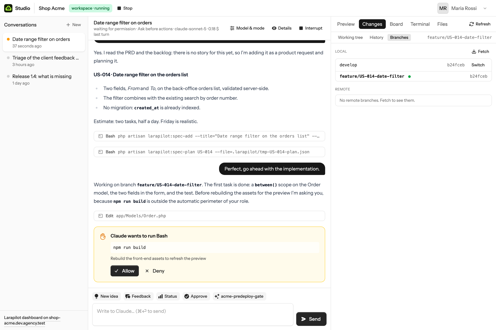
- Working tree
- Branch,
git status, stat and diff of what is not committed yet; refreshed after every stored chat event while the tab is open.
- History
- The newest 80 commits of all branches in date order, drawn as lanes the way editors do:
a branch opens a lane, a merge closes it. Refs show as badges (branches,
origin/…, tags). Click a commit for its message, author, date, the files it touched and the patch.
- Branches
- Local branches with their upstream and ahead/behind, remote branches, Fetch. Switch checks a branch out in the workspace; the preview follows, and so does the access rule of that branch. Switch and Fetch act on your own workspace.
Terminal
A tab in the right pane runs commands in your workspace, as you, without the agent in between.
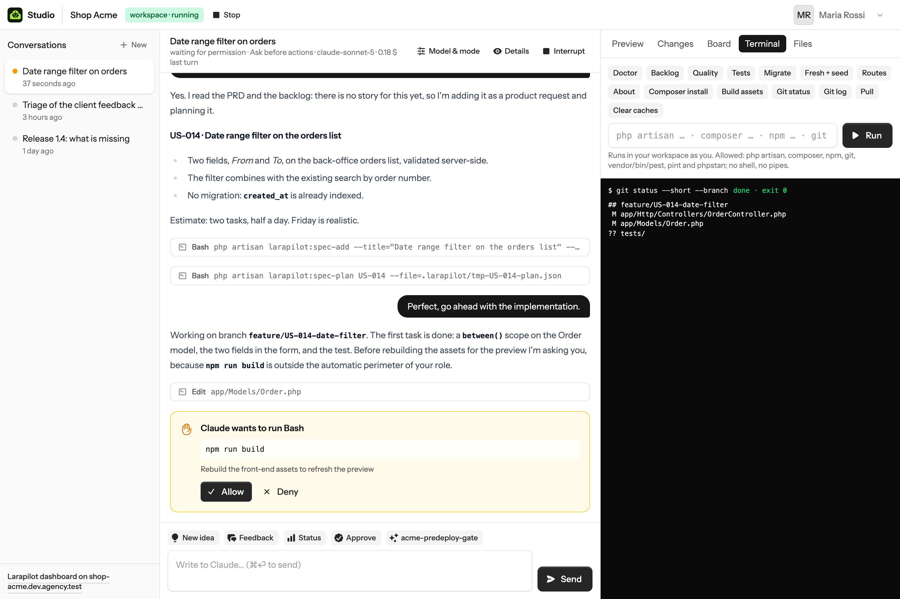
It is not a shell. The bridge takes the line, splits it into words, checks the binary and its first argument against a list, refuses anything that looks like shell syntax, and runs the binary directly in the workspace directory. Allowed today:
| Binary | Allowed | Refused |
|---|---|---|
php artisan … | Any artisan command with plain options | tinker, serve, db:wipe, down, migrate:fresh --force |
composer | install, update, require, remove, dump-autoload, show, outdated, audit, run, test, lint | everything else |
npm | ci, install, run …, test, outdated, audit, ls | everything else |
git | status, log, diff, branch, fetch, pull, checkout, switch, stash, show, add, commit, push, restore, remote, tag | --force, -f, branch -D, force pushes |
vendor/bin/… | pest, pint, phpstan, phpunit, rector | other binaries |
| any | plain words, paths and options | quotes, ;, &&, |, >, $(), backticks |
Output is kept to 200 KB and a command is killed after ten minutes. The shortcuts come from
config/studio.php; the allowlist lives in the bridge (bridge/src/commands.js), so what the
dashboard sends is checked where it runs. Clients have no terminal.
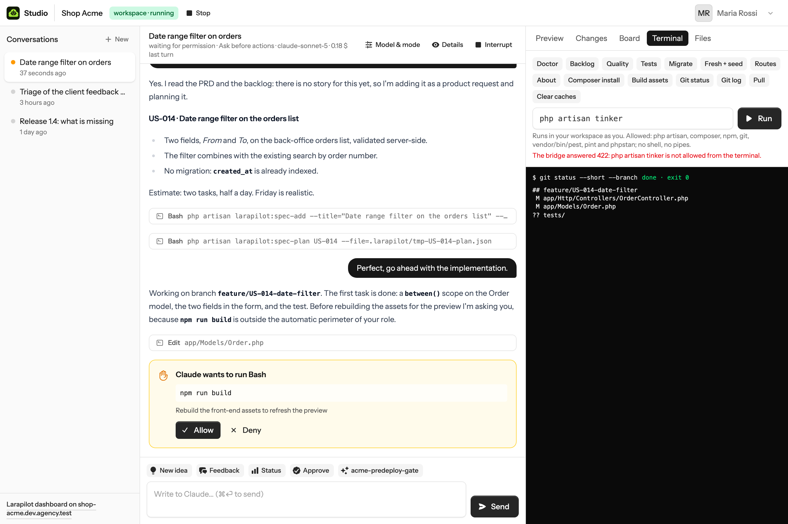
Subagents, plan mode, skills
The chat is the full Claude Code CLI running in the workspace. What works in the terminal works here.
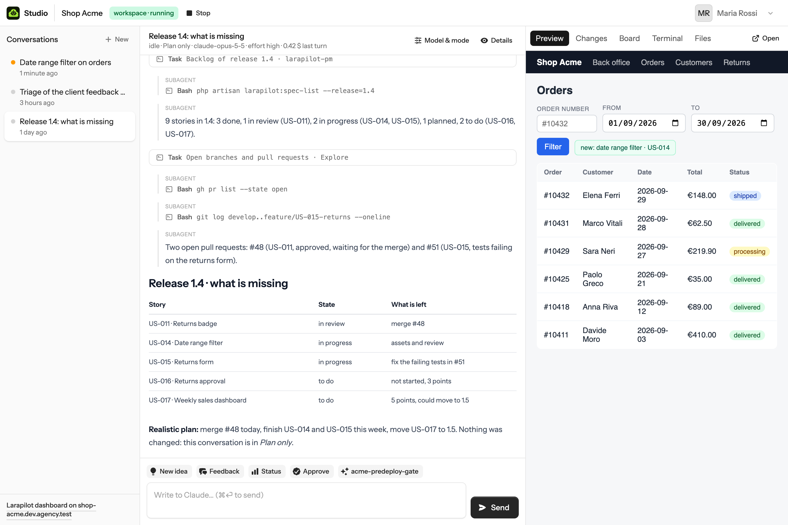
- Subagents
- When Claude delegates to a subagent, its messages carry the parent call and the chat shows them indented under a subagent label. Larapilot's personas and the autopilot worker use this.
- Plan mode
- Plan only in Model & mode: Claude reads and proposes, touches nothing. Switch to another mode when the plan looks right.
- Skills and slash commands
- Every
/larapilot-*skill, the project's custom skills and any other skill in the repository: type the command.
- MCP servers
- Those in the repository's
.mcp.jsonare loaded, with secrets from the workspace environment, Laravel Boost and Larapilot's own server included; plus the remote servers added in the project's settings (see MCP servers).
- Hooks
- Larapilot's workflow hooks and Claude Code hooks run as they would in an editor; their output is kept out of the chat.
- Not available
- What needs a screen: images pasted into the prompt, the interactive command palette, voice. Interrupt replaces Escape.
Workspaces
A workspace is created the first time you open a project, started and stopped from the header, checked against the server every minute.
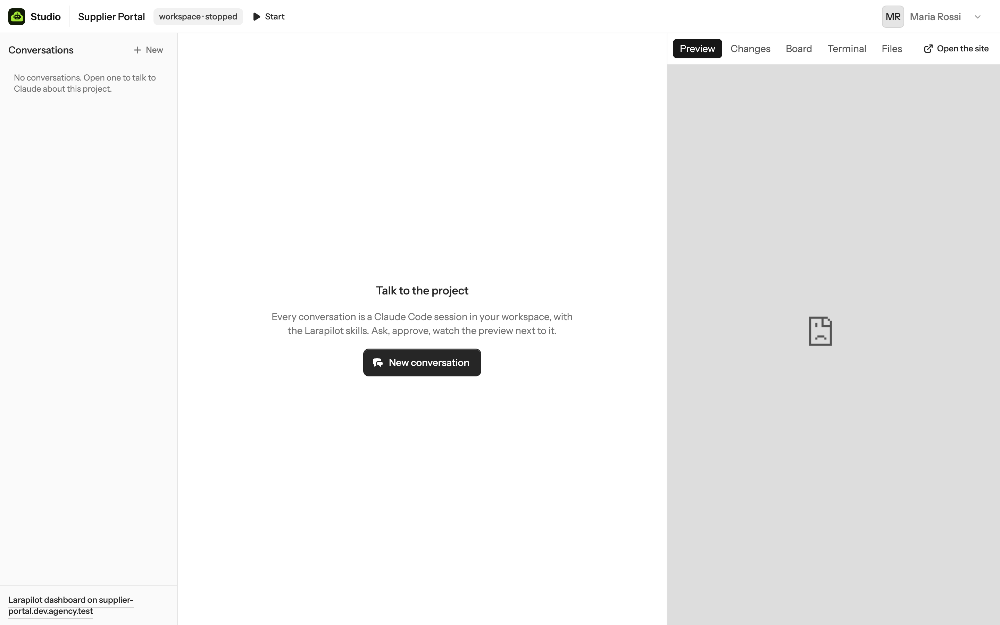
- Start / Stop start or stop the bridge and release the preview. Conversations and their sessions stay; a stopped workspace cannot receive a message, and the input says so.
- What persists: everything, it is a directory and a database on the server: the clone, the dependencies, the Claude login in the person's home.
- What does not: work that is not pushed, if the workspace is deleted. Keep branches short and pull requests small; the Larapilot loop wants that anyway.
- Memory: PHP-FPM pools are on demand and a stopped workspace costs nothing; the Claude Code process is released after ten idle minutes and resumed on the next message.
Clients
A client account sees the projects it belongs to and their staging site as preview, with its Larapilot dashboard behind the same login. No chat, no workspace, no terminal or files, no cost.
It is the role for the person who pays: they follow what is in review and what shipped without opening another tool, and without an email thread. If a client should also talk to the project, give them the PM role; from then on they have a workspace and a Claude plan of their own.
Architecture
Laravel 13, Livewire 4 with Flux, Fortify, Reverb. A Node bridge per workspace. One bash helper with root.
Sends turns, permission answers and interrupts to the bridge, and tells it with every turn where to call back and with which token.
Turns the bridge's events into messages,
permission requests, status changes and ConversationUpdated broadcasts. text_delta is
broadcast only, never stored.
Picks the driver: LocalDriver
for development, NativeDriver for workspaces on this server through the helper.
The client of the helper, and the lifecycle of a project site: create, deploy, destroy, the push webhook.
GitHub, GitLab,
Bitbucket, AzureDevOps behind one GitProvider: who a token belongs to, where it
may create repositories, the repository itself, the push webhook and how its deliveries are verified, the git user
name and the variables the agent's CLI and Larapilot read.
Reads the updater's state for Administration → System and asks the helper to check, to start an update (forced or not), to switch the channel or the nightly timer.
The access rules of a host (always the Studio login, narrowed by address lists and branch overrides) and the one-time token and per-host pass that let a Studio member in.
The MCP
servers of a project, with their encrypted header and roles, and the initialize call behind
Test.
ProvisionWorkspace, StartWorkspace,
StopWorkspace, SendTurn, AnswerPermission, RefreshWorkspaces,
ProvisionProjectSite, DeployProjectSite, ConfigureProjectSite,
DestroyProjectSite, SyncWorkspaceCredentials on the database queue, so a clone or a build
never blocks a page.
Events the bridge sends
| Event | Studio does |
|---|---|
init | Keeps the session id and the model; the conversation is working |
text_delta | Broadcasts the slice to the open chat; nothing stored |
text, thinking | Stores an assistant message (reasoning hidden unless Details is on) |
tool_use, tool_result | Stores the call and folds the result under it |
permission_request | Creates the pending request; the conversation waits |
permission_resolved | Marks the request if it was still open; working again |
result | Idle (or failed), keeps cost and usage, closes dangling questions as denied |
error | A red notice; the conversation is failed until the next message |
status | Broadcast only (rate limits, background task notes) |
| anything else | Stored raw and hidden, so a renderer added later can show it |
The bridge
A zero-dependency Node service in bridge/. It starts, per conversation,
claude -p --output-format stream-json --input-format stream-json --include-partial-messages --verbose
--permission-mode <mode> --permission-prompt-tool stdio, keeps stdin open so the next turn is one more
line, and resumes with --resume <session> after the idle release. A control_request
of kind can_use_tool is held until Studio answers; the answer is written back as a
control_response.
| Method | Path | Body |
|---|---|---|
| GET | /health | open: version and uptime only |
| GET | /info | version, workspace directory, sessions |
| POST | /conversations/{key}/turns | {text, session_id?, permission_mode?, model?, effort?, mcp_servers?, callback: {url, token}} → 202, or 409 while a turn is still running; mcp_servers is {name: {type: "http", url, headers}}, and a change starts a new process |
| POST | /conversations/{key}/permissions/{request_id} | {behavior: allow|deny, message?} |
| POST | /conversations/{key}/interrupt | — |
| GET | /skills | custom skills from .larapilot/skills and .claude/skills |
| POST | /run | {command} → 202 with the run; refused with 422 when not on the allowlist |
| GET | /run, /run/{id} | recent runs, one run with its output so far |
| POST | /run/{id}/kill | stop a run |
| GET | /git | branch, status, stat, diff of the working tree |
| GET | /git/log?limit=, /git/branches, /git/commit/{sha} | history with parents and refs; local and remote branches; one commit with stat and patch |
| POST | /git/checkout, /git/fetch | {branch} switches the working tree; fetch with prune |
| GET | /files?path=, /files/read?path= | one folder (folders first, .git hidden); a file's text with the hash of its bytes, or binary / too_large |
| PUT | /files | {path, content, hash} writes atomically; 409 when the file no longer matches hash |
| POST | /files, /files/rename | {path, type} creates a file or folder; {from, to} renames |
| DELETE | /files?path= | a file, or a folder with its contents; never the workspace itself |
Every route but /health wants Authorization: Bearer $BRIDGE_TOKEN. Environment:
BRIDGE_TOKEN, BRIDGE_PORT (4455), BRIDGE_HOST (127.0.0.1), WORKSPACE_DIR,
CLAUDE_BIN, BRIDGE_IDLE_TTL (600 s), BRIDGE_FLUSH_MS (200), and the
terminal and file limits in Configuration.
The protocol follows Claude Code's stream-json as documented by Spatie's Bloom.
--permission-prompt-tool stdio is not in Anthropic's documentation: workspaces run Claude Code with
auto-update off, so it changes only when you update it, and the bridge's tests, part of CI, run against a stand-in
that speaks the protocol.
On the server
studio-admin is a bash script with root, allowed to the studio user through sudo for a
fixed list of commands. Names travel as arguments and are validated against [a-z0-9-]; secrets travel
as JSON on stdin; the answer is one JSON object. Studio calls it from queued jobs.
| Command | Does |
|---|---|
project-bootstrap <slug> | For a repository Studio just created: the latest Laravel, Laravel Boost and Larapilot, installed, committed and pushed. |
project-create <slug> | Linux user, clone with the deploy token, database, .env, build with dev dependencies, migrations, PHP-FPM pool, Caddy host, the services of the project settings (cron, queue workers or Horizon, Reverb, Pulse) and the access check when the project has rules. Returns the Larapilot API token and the commit. |
project-deploy <slug> | Fetch, reset to the branch, build, migrate, restart the services. Returns the commit. |
project-configure, workspace-configure | Apply changed project settings to the site or to one preview: services, cron, Caddy host and access check. |
project-delete <slug> | Removes services, host, pool, database, user and files. |
workspace-create <user> <slug> | Linux user ws-<user> if new, the env file with the person's tokens, clone with their token, database copied from the site, .env, build, custom skills registered, pool, Caddy host, the bridge as a systemd service. |
workspace-env | Rewrites the tokens (the git token and user name, the provider's variables for the agent, the Claude credential) and restarts the bridge. |
workspace-start, -stop, -status, -delete | What they say. Stop also kills the person's processes in that directory. |
update-check, update-start [force], update-channel, update-auto | For the System page: ask studio-update what the channel would install, start studio-update.service or studio-update-force.service (their own units, so they outlive the queue worker they restart), switch the channel and the nightly timer. |
Two drivers in Studio: local points every workspace at one bridge on the developer's machine, for
working on Studio itself; native is the one the installer configures. A workspace keeps the driver it
was created with.
Security
- Accounts: invite-only; email and password with two-factor and passkeys; roles enforced by policies on every page and action.
- Previews and sites: served over HTTPS by Caddy. A preview runs with
APP_DEBUG=true: every project host is behind the Studio login and the project assignment, narrowed by the access rules (address lists, branch overrides), which Caddy checks before the app sees the request. Studio's own session cookie never reaches a project host. - Bridge: listens on the loopback only, one port per workspace, with a token per workspace. Its callbacks carry a second token per workspace that Studio stores hashed and matches on every request.
- Root: only
studio-admin, through sudo, for named commands with validated arguments. Studio never runs shell commands of its own. - Secrets: git provider and Claude tokens, bridge and callback tokens, webhook secrets, MCP server headers and the Larapilot API token are encrypted at rest with the app key. On the server, each person's tokens sit in a root-owned file readable by their Linux user only, and git gets the token from the environment through an askpass helper, never from a file.
- The agent: runs as
ws-<user>; Unix permissions keep it out of other people's homes and out of the project sites; managed settings deny reading the login files and disable bypass mode. It is not a kernel boundary between two workspaces of the same person. - Updates:
studio-updateruns as root and installs the release tags of the repository instudio.env(and, on a beta server, the head of main). Whoever can push such a tag, or push to main for beta servers, can run code as root on every server that updates from it: protect the tags and the branch, sign them, and list the allowed keys in/etc/studio/update-signersso an unsigned or foreign build is refused. Turn the nightly updates off to read each release before installing it. - Transport: HTTPS everywhere; Studio's loopback listener on 8081 serves only the TLS question, the access check of protected hosts and the bridges' callbacks.
For zero public exposure put the server on a tailnet; then every person needs the client. Most agencies will keep Studio public with two-factor on.
Configuration
The installer writes /opt/studio/shared/.env, which every release links. The keys that are Studio's own:
| Variable | Meaning |
|---|---|
STUDIO_DOMAIN | The domain every host hangs under |
STUDIO_WORKSPACE_DRIVER | native on a server, local while developing Studio |
STUDIO_GIT_PROVIDER, STUDIO_GIT_URL | github, gitlab, bitbucket or azure; the address of a self-managed GitLab, or https://dev.azure.com/<organization> (required for Azure DevOps). Change them only with php artisan studio:git-provider, while there are no projects |
STUDIO_PHP_VERSIONS | The PHP versions a project can pick, kept by the installer and the updater in step with what is installed (8.3,8.4,8.5) |
STUDIO_UPDATE_STATE, STUDIO_UPDATE_REPOSITORY | Where the updater leaves its state (/var/lib/studio-update/state.json); the repository the release links point at |
STUDIO_HELPER, STUDIO_HELPER_SUDO, STUDIO_HELPER_TIMEOUT | Path of studio-admin, whether to go through sudo, seconds a command may take (1200) |
STUDIO_BRIDGE_PORT_BASE | Bridges listen on 127.0.0.1 at base + workspace id (42000) |
STUDIO_CALLBACK_URL, STUDIO_BRIDGE_TIMEOUT | Where bridges post events: http://127.0.0.1:8081/api/bridge/events on a server; seconds Studio waits for a bridge (15) |
STUDIO_LOCAL_BRIDGE_URL, STUDIO_LOCAL_BRIDGE_TOKEN, STUDIO_LOCAL_APP_URL | The one bridge and preview of the local driver |
REVERB_*, VITE_REVERB_* | Websockets for the live chat; Caddy proxies /app and /apps on the Studio host to Reverb |
APP_LOCALE | en by default; it ships in lang/it.json |
BRIDGE_FILE_MAX | Bridge: largest file the Files tab opens or saves, in bytes (512 KB) |
BRIDGE_RUN_TIMEOUT, BRIDGE_RUN_OUTPUT, BRIDGE_RUN_HISTORY | Bridge: seconds a terminal command may run (600), bytes of output kept (200 KB), runs remembered (20) |
config/studio.php holds the permission preset and the allowed modes per role, the
model and effort lists, and the terminal shortcuts. What changes per project (services, access rules, MCP servers)
lives in the project settings, not in files.
/etc/studio/studio.env holds what the helper and the updater need: the domain, the paths, the PHP that
runs Studio, the repository releases come from (STUDIO_REPO), AUTO_UPDATE and
UPDATE_CHANNEL (stable or beta).
Local development
-
composer setup && php artisan studio:make-admin -
composer run dev # server, queue, logs, vite · add: php artisan reverb:start -
cd ~/code/some-laravel-app && BRIDGE_TOKEN=local-bridge-token WORKSPACE_DIR=$PWD node ~/code/studio/bridge/bin/bridge.js
The bridge drives the claude on your machine with your login. Create a project in Administration, add
yourself, open it: with the local driver the workspace is running at once and the chat talks to that
bridge, no git provider or Claude connection needed. php artisan db:seed --class=DemoSeeder gives the agency of
the screenshots, password password for everyone.
-
composer test # pint, phpstan, pest -
cd bridge && npm test # node:test with a stand-in Claude CLI -
bash tests/installer/studio-update.test.sh # the updater in a sandbox